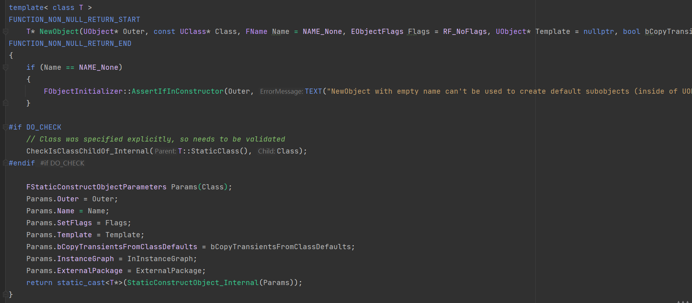
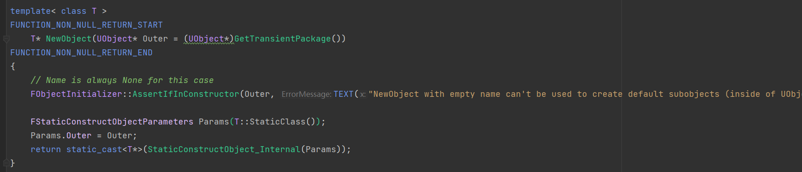
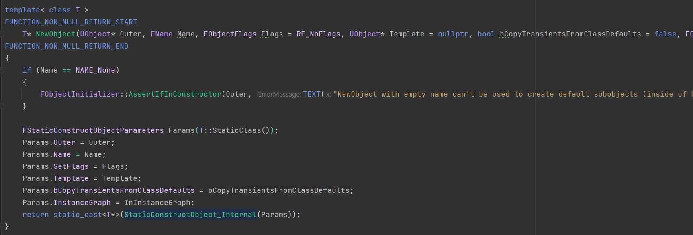
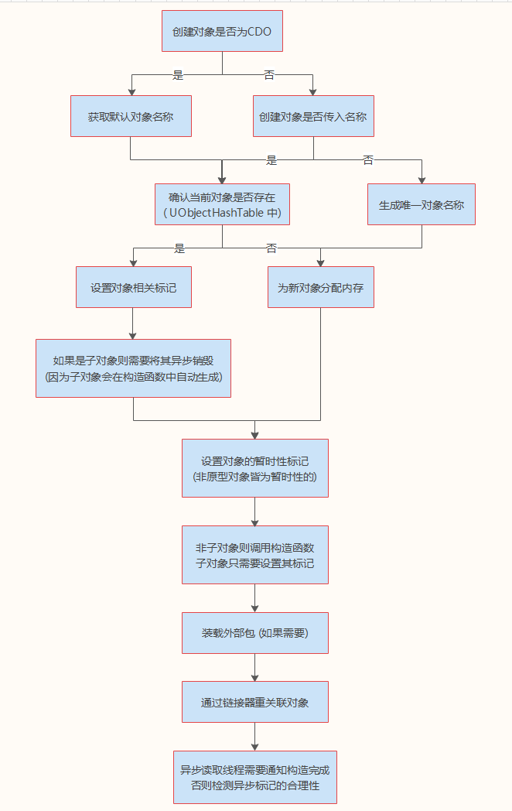
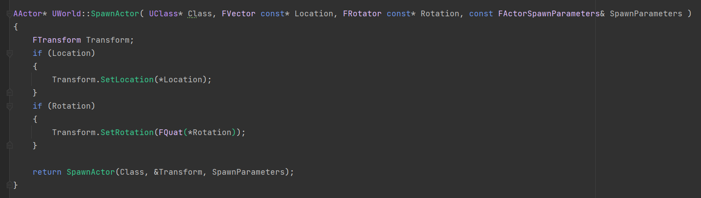
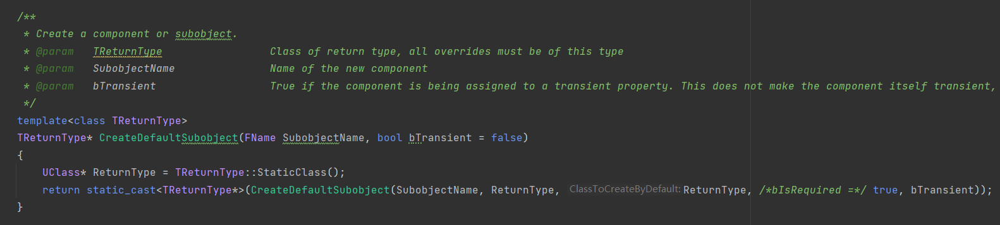

# Unreal 常用接口源码分析 之一简介：本篇包括对 NewObject, SpawnActor, CreateDefaultSubobject 等对象构造相关的类及函数的解析。
# NewObject<ClassName>(...)首先，我们使用的 NewObject 函数是定义在 UObjectGlobals 类中的，拥有三个重载。其函数体如下：



从上面代码中可以看出，三个重载函数如出一辙。只是为了方便开发者使用而实现的不同版本 NewObject<...>() 。步骤如下：
首先如果没有传入子类名称且 Outer 为子类则会导致 "New"(与 cpp 的 new 不太一样) 出来的对象的名称与实际名称不一致 (这种对象不符合 unreal 标准)，所以需要触发断言。 初始化静态构造对象的参数，调用 StaticConstructObject_Internal() 函数静态构造此对象。(重要) # StaticConstructObject_Internal函数定义如下：
StaticConstructObject_Internal 1 2 3 4 5 6 7 8 9 10 11 12 13 14 15 16 17 18 19 20 21 22 23 24 25 26 27 28 29 30 31 32 33 34 35 36 37 38 39 40 UObject* StaticConstructObject_Internal (const FStaticConstructObjectParameters& Params) const UClass* InClass = Params.Class; UObject* InOuter = Params.Outer; const FName& InName = Params.Name; EObjectFlags InFlags = Params.SetFlags; UObject* InTemplate = Params.Template; UObject* Result = NULL ; const bool bIsNativeClass = InClass->HasAnyClassFlags (CLASS_Native | CLASS_Intrinsic); const bool bIsNativeFromCDO = bIsNativeClass && ( !InTemplate || (InName != NAME_None && (Params.bAssumeTemplateIsArchetype || InTemplate == UObject::GetArchetypeFromRequiredInfo (InClass, InOuter, InName, InFlags))) ); const bool bCanRecycleSubobjects = bIsNativeFromCDO && (!(InFlags & RF_DefaultSubObject) || !FUObjectThreadContext::Get ().IsInConstructor) bool bRecycledSubobject = false ; Result = StaticAllocateObject (InClass, InOuter, InName, InFlags, Params.InternalSetFlags, bCanRecycleSubobjects, &bRecycledSubobject, Params.ExternalPackage); check (Result != NULL ); if (!bRecycledSubobject) { (*InClass->ClassConstructor)( FObjectInitializer (Result, InTemplate, Params.bCopyTransientsFromClassDefaults, true , Params.InstanceGraph) ); } if ( GIsEditor && GUndo && (InFlags & RF_Transactional) && !(InFlags & RF_NeedLoad) && !InClass->IsChildOf (UField::StaticClass ()) ) { Result->MarkPendingKill (); SaveToTransactionBuffer (Result, false ); Result->ClearPendingKill (); } return Result; }
此函数理解起来也不算难，步骤可分为：
先取出传进来的参数 然后确认该类的一些参数，如：是否为本地类 (cpp 定义的类)，是否为本地类且由 CDO 创建，是否可以回收子类 (采取不同的构造策略) 调用 StaticAllocateObject() 静态分配对象，并确认该对象是否为回收的子对象。如果不是则使用 FObjectInitializer 初始化此对象的属性，完成此对象的构造。(重要) # StaticAllocateObject函数定义如下：
StaticAllocateObject 1 2 3 4 5 6 7 8 9 10 11 12 13 14 15 16 17 18 19 20 21 22 23 24 25 26 27 28 29 30 31 32 33 34 35 36 37 38 39 40 41 42 43 44 45 46 47 48 49 50 51 52 53 54 55 56 57 58 59 60 61 62 63 64 65 66 67 68 69 70 71 72 73 74 75 76 77 78 79 80 81 82 83 84 85 86 87 88 89 90 91 92 93 94 95 96 97 98 99 100 101 102 103 104 105 106 107 108 109 110 111 112 113 114 115 116 117 118 119 120 121 122 123 124 125 126 127 128 129 130 131 132 133 134 135 136 137 138 139 140 141 142 143 144 145 146 147 148 149 150 151 152 153 154 155 156 UObject* StaticAllocateObject ( const UClass* InClass, UObject* InOuter, FName InName, EObjectFlags InFlags, EInternalObjectFlags InternalSetFlags, bool bCanRecycleSubobjects, bool * bOutRecycledSubobject, UPackage* ExternalPackage ) bool bCreatingCDO = (InFlags & RF_ClassDefaultObject) != 0 ; if (bCreatingCDO) { InName = InClass->GetDefaultObjectName (); InFlags &= ~(RF_NeedPostLoad|RF_NeedPostLoadSubobjects); } UObject* Obj = NULL ; if (InName == NAME_None) { InName = MakeUniqueObjectName (InOuter, InClass); } else { Obj = StaticFindObjectFastInternal ( NULL , InOuter, InName, true ); } FLinkerLoad* Linker = NULL ; int32 LinkerIndex = INDEX_NONE; bool bWasConstructedOnOldObject = false ; bool bSubObject = false ; int32 TotalSize = InClass->GetPropertiesSize (); if ( Obj == NULL ) { int32 Alignment = FMath::Max ( 4 , InClass->GetMinAlignment () ); Obj = (UObject *)GUObjectAllocator.AllocateUObject (TotalSize,Alignment,GIsInitialLoad); } else { ObjectRestoreAfterInitProps = Obj->GetRestoreForUObjectOverwrite (); Linker = Obj->GetLinker (); LinkerIndex = Obj->GetLinkerIndex (); InternalSetFlags |= (Obj->GetInternalFlags () & (EInternalObjectFlags::Native | EInternalObjectFlags::RootSet)); if ( bCreatingCDO ) { check (Obj->HasAllFlags (RF_ClassDefaultObject)); Obj->SetFlags (InFlags); Obj->SetInternalFlags (InternalSetFlags); Obj->ClearFlags (RF_NeedPostLoad|RF_NeedPostLoadSubobjects); } if (!bCreatingCDO && (!bCanRecycleSubobjects || !Obj->IsDefaultSubobject ())) { if (!Obj->HasAnyFlags (RF_FinishDestroyed)) { FString OldName = Obj->GetFullName (); Obj->ConditionalBeginDestroy (); bool bPrinted = false ; double StallStart = 0.0 ; while (!Obj->IsReadyForFinishDestroy ()) { FPlatformProcess::Sleep (0 ); } Obj->ConditionalFinishDestroy (); } GUObjectArray.LockInternalArray (); Obj->~UObject (); GUObjectArray.UnlockInternalArray (); bWasConstructedOnOldObject = true ; } else { bSubObject = true ; } bool const bCreatingArchetype = (InFlags & RF_ArchetypeObject) != 0 ; if ( !bCreatingCDO && InClass->HasAnyClassFlags (CLASS_Transient) && !bCreatingArchetype ) { InFlags |= RF_Transient; } if (!bSubObject) { FMemory::Memzero ((void *)Obj, TotalSize); new ((void *)Obj) UObjectBase (const_cast <UClass*>(InClass), InFlags|RF_NeedInitialization, InternalSetFlags, InOuter, InName); } else { Obj->SetFlags (InFlags); Obj->SetInternalFlags (InternalSetFlags); } if (ExternalPackage) { Obj->SetExternalPackage (ExternalPackage); } if (bWasConstructedOnOldObject) { Obj->SetLinker (Linker,LinkerIndex,false ); if (Linker) { check (Linker->ExportMap[LinkerIndex].Object == NULL ); Linker->ExportMap[LinkerIndex].Object = Obj; } } if (IsInAsyncLoadingThread ()) { NotifyConstructedDuringAsyncLoading (Obj, bSubObject); } else { Obj->ClearInternalFlags (EInternalObjectFlags::AsyncLoading); if (Obj->HasAnyInternalFlags (EInternalObjectFlags::Async) && IsInGameThread ()) { Obj->ClearInternalFlags (EInternalObjectFlags::Async); } } if (bOutRecycledSubobject) { *bOutRecycledSubobject = bSubObject; } return Obj; }
此函数需要为三种对象分配内存，即：
CDO 传入名称或未传入名称的对象 传入名称的子对象 (用于 CreateDefaultSubobject 等函数) 以下是处理过程图解：

总得来说，先用对象名称在全局的 UObjectHashTable 中寻找是否存在此对象，如果找不到或一开始就没有对象名称，则直接为此对象分配内存空间。如果找到了且不是子对象，则可以更新其相关标记后直接使用，如果为子对象，则需要异步销毁，因为我们子对象的外部对象的构造函数中默认需要对其进行构造。
紧接着需要为非原型对象标记为暂时性的，原型对象是保存在 GUObjectArray 全局数组中的对象，所有存活的对象都保存在其中。然后需要调用对象构造函数，装载外部包，重关联对象，异步通知等。
值得注意的是，这里调用构造函数的方法为：
new ((void *)Obj) UObjectBase(const_cast<UClass*>(InClass), InFlags|RF_NeedInitialization, InternalSetFlags, InOuter, InName);
此方法是在构造 UObject 的基类对象 UObjectBase ，并初始化其相关属性 (ClassPrivate, OuterPrivate 等) 。其子类的构造函数是在 StaticAllocateObject 之后，使用 FObjectInitializer 调用的。此外，在构造函数调用后， FObjectInitializer 析构时，将对子对象与组件进行初始化 (后面用到)。
# SpawnActor(...)SpawnActorByClass 这个蓝图节点相信用过 UE 的家人们都不陌生。此节点的实现依赖于 UWorld::SpawnActor 函数，节点的具体实现方法 请参考写者的另一篇博客。以下是对 UWorld::SpawnActor 的函数解析。

内部的 SpawnActor 函数代码过长，不方便截图，以下是其核心代码。
SpawnActor 1 2 3 4 5 6 7 8 9 10 11 12 13 14 15 16 17 18 19 20 21 22 23 24 25 26 27 28 29 30 31 32 33 34 35 36 37 38 39 40 41 42 43 44 45 46 47 48 49 50 51 52 53 54 55 56 57 58 59 60 61 62 63 64 65 66 67 68 69 70 71 72 73 74 75 76 77 78 79 80 81 82 83 84 85 86 87 88 89 90 91 92 93 94 95 96 97 98 99 100 101 102 103 104 105 106 107 108 109 110 111 112 113 114 115 116 117 118 119 120 121 122 123 124 125 126 127 128 129 130 131 132 133 134 135 136 AActor* UWorld::SpawnActor ( UClass* Class, FTransform const * UserTransformPtr, const FActorSpawnParameters& SpawnParameters ) ULevel* CurrentLevel = PersistentLevel; ULevel* LevelToSpawnIn = SpawnParameters.OverrideLevel; if (LevelToSpawnIn == NULL ) { LevelToSpawnIn = (SpawnParameters.Owner != NULL ) ? SpawnParameters.Owner->GetLevel () : CurrentLevel; } FName NewActorName = SpawnParameters.Name; AActor* Template = SpawnParameters.Template; if ( !Template ) { Template = Class->GetDefaultObject<AActor>(); } if (NewActorName.IsNone ()) { if (!Template->HasAnyFlags (RF_ClassDefaultObject)) { NewActorName = MakeUniqueObjectName (LevelToSpawnIn, Template->GetClass (), *Template->GetFName ().GetPlainNameString ()); } } else if (StaticFindObjectFast (nullptr , LevelToSpawnIn, NewActorName)) { if (SpawnParameters.NameMode == FActorSpawnParameters::ESpawnActorNameMode::Requested) { NewActorName = MakeUniqueObjectName (LevelToSpawnIn, Template->GetClass (), *NewActorName.GetPlainNameString ()); } else { return nullptr ; } } FTransform const UserTransform = UserTransformPtr ? *UserTransformPtr : FTransform::Identity; ESpawnActorCollisionHandlingMethod CollisionHandlingOverride = SpawnParameters.SpawnCollisionHandlingOverride; if (SpawnParameters.bNoFail) { if (CollisionHandlingOverride == ESpawnActorCollisionHandlingMethod::AdjustIfPossibleButDontSpawnIfColliding) { CollisionHandlingOverride = ESpawnActorCollisionHandlingMethod::AdjustIfPossibleButAlwaysSpawn; } else if (CollisionHandlingOverride == ESpawnActorCollisionHandlingMethod::DontSpawnIfColliding) { CollisionHandlingOverride = ESpawnActorCollisionHandlingMethod::AlwaysSpawn; } } ESpawnActorCollisionHandlingMethod const CollisionHandlingMethod = (CollisionHandlingOverride == ESpawnActorCollisionHandlingMethod::Undefined) ? Template->SpawnCollisionHandlingMethod : CollisionHandlingOverride; if (CollisionHandlingMethod == ESpawnActorCollisionHandlingMethod::DontSpawnIfColliding) { USceneComponent* const TemplateRootComponent = Template->GetRootComponent (); FTransform const FinalRootComponentTransform = TemplateRootComponent ? FTransform (TemplateRootComponent->GetRelativeRotation (), TemplateRootComponent->GetRelativeLocation (), TemplateRootComponent->GetRelativeScale3D ()) * UserTransform : UserTransform; FVector const FinalRootLocation = FinalRootComponentTransform.GetLocation (); FRotator const FinalRootRotation = FinalRootComponentTransform.Rotator (); if (EncroachingBlockingGeometry (Template, FinalRootLocation, FinalRootRotation)) { UE_LOG (LogSpawn, Log, TEXT ("SpawnActor failed because of collision at the spawn location [%s] for [%s]" ), *FinalRootLocation.ToString (), *Class->GetName ()); return nullptr ; } } EObjectFlags ActorFlags = SpawnParameters.ObjectFlags; UPackage* ExternalPackage = nullptr ; AActor* const Actor = NewObject<AActor>(LevelToSpawnIn, Class, NewActorName, ActorFlags, Template, false , nullptr , ExternalPackage); if ( GUndo ) { if (ExternalPackage) { LevelToSpawnIn->GetPackage ()->ClearDirtyFlag (); } ModifyLevel ( LevelToSpawnIn ); } LevelToSpawnIn->Actors.Add ( Actor ); LevelToSpawnIn->ActorsForGC.Add (Actor); Actor->SpawnCollisionHandlingMethod = CollisionHandlingMethod; OnActorPreSpawnInitialization.Broadcast (Actor); Actor->PostSpawnInitialize (UserTransform, SpawnParameters.Owner, SpawnParameters.Instigator, SpawnParameters.IsRemoteOwned (), SpawnParameters.bNoFail, SpawnParameters.bDeferConstruction); if (ExternalPackage) { LevelToSpawnIn->GetPackage ()->ClearDirtyFlag (); } Actor->CheckDefaultSubobjects (); OnActorSpawned.Broadcast (Actor); AddNetworkActor ( Actor ); return Actor; }
从核心代码中可以看出， SpawnActor 的步骤大致如下：
首先确定一些生成此 Actor 所需的一些参数，如：在哪个 World 中生成，Actor 的模板对象 (没有则使用 CDO) 和名称，Actor 生成的 Transform 和碰撞处理方法 (CollisionHandlingMethod)，Actor 的对象标记以及外部包 用上一步中处理好的参数，调用 NewObject 方法生成对象。 NewObject 方法在上文中我们已经解析过了，不再赘述。(主要是为新对象分配内存和调用构造函数) 将 Actor 添加到对应关卡的 Actors 和 ActorsForGC 数组里，广播 Actor 的预生成初始化代理，调用 Actor 的后处理生成初始化函数 ( PostSpawnInitialize )，再检查默认子对象后，广播 Actor 生成结束代理，将 Actor 添加到网络对象中，返回 Actor 即可。 PostSpawnInitialize 函数主要是丰富之前构造好的 Actor 的属性，组件的创建注册后处理，以及执行本地和蓝图构造脚本等，其中：
设置基本属性包括：NetRoles, Owner, Instigator, RootComponent.Transform 等， 组件的创建注册后处理包括： DispatchOnComponentsCreated 的函数调用 (调用所有默认本地组件的 OnComponentCreated )， RegisterAllComponents 的函数调用 (调用 PostRegisterAllComponents ，如果是蓝图等脚本实例，则需要延迟本地注册直至 SCS 执行后建立场景根) 执行本地和蓝图构造脚本包括： ExecuteConstruction 的函数调用 (设置根组件的变换，为蓝图 Actor 创建并注册组件，调用蓝图脚本的 OnConstruction 函数) 和 PostActorConstruction 的函数调用 (初始化上一步中创建出来的组件)。 # CreateDefaultSubobject<ClassName>(...)CreateDefaultSubobject 此函数的调用大致可分为两种情况，在类的构造函数内调用和运行时调用。在类的构造函数内调用时，我们可以在蓝图编辑器中看到此组件 / 子对象，称之为静态创建子对象 。运行时调用时功能相同，但无法在蓝图编辑器中看到或使用，因为该对象在编辑器中编辑时，其子对象仍未被创建，此行为我们称之为动态创建子对象 。
我们平时调用的 CreateDefaultSubobject 函数是定义在 UObject 中的泛型函数。代码如图：


CreateDefaultSubobject 1 2 3 4 5 6 7 8 9 10 11 12 13 14 15 16 17 18 19 20 21 22 23 24 25 26 27 28 29 30 31 32 33 34 35 36 37 38 39 40 41 42 43 44 45 46 47 48 49 50 51 52 53 54 55 56 57 58 59 60 61 62 63 64 65 66 67 68 69 70 71 72 UObject* FObjectInitializer::CreateDefaultSubobject (UObject* Outer, FName SubobjectFName, UClass* ReturnType, UClass* ClassToCreateByDefault, bool bIsRequired, bool bIsTransient) const UObject* Result = NULL ; UClass* OverrideClass = ComponentOverrides.Get (SubobjectFName, ReturnType, ClassToCreateByDefault, *this ); if (!OverrideClass && bIsRequired) { OverrideClass = ClassToCreateByDefault; } if (OverrideClass) { check (OverrideClass->IsChildOf (ReturnType)); if (OverrideClass->HasAnyClassFlags (CLASS_Abstract)) { if (!bIsRequired && !Outer->GetClass ()->HasAnyClassFlags (CLASS_Abstract)) { UE_LOG (LogClass, Warning, TEXT ("Required default subobject %s not created as requested class %s is abstract. Returning null." ), *SubobjectFName.ToString (), *OverrideClass->GetName ()); } } else { UObject* Template = OverrideClass->GetDefaultObject (); EObjectFlags SubobjectFlags = Outer->GetMaskedFlags (RF_PropagateToSubObjects) | RF_DefaultSubObject; bool bOwnerArchetypeIsNotNative; UClass* OuterArchetypeClass; OuterArchetypeClass = Outer->GetArchetype ()->GetClass (); bOwnerArchetypeIsNotNative = !OuterArchetypeClass->HasAnyClassFlags (CLASS_Native | CLASS_Intrinsic); const bool bOwnerTemplateIsNotCDO = ObjectArchetype != nullptr && ObjectArchetype != Outer->GetClass ()->GetDefaultObject (false ) && !Outer->HasAnyFlags (RF_ClassDefaultObject); FStaticConstructObjectParameters Params (OverrideClass) ; Params.Outer = Outer; Params.Name = SubobjectFName; Params.SetFlags = SubobjectFlags; Result = StaticConstructObject_Internal (Params); if (!bIsTransient && (bOwnerArchetypeIsNotNative || bOwnerTemplateIsNotCDO)) { UObject* MaybeTemplate = nullptr ; if (bOwnerTemplateIsNotCDO) { MaybeTemplate = ObjectArchetype->GetDefaultSubobjectByName (SubobjectFName); } if (!MaybeTemplate) { MaybeTemplate = OuterArchetypeClass->GetDefaultSubobjectByName (SubobjectFName); } if (MaybeTemplate && MaybeTemplate->IsA (ReturnType) && Template != MaybeTemplate) { ComponentInits.Add (Result, MaybeTemplate); } } if (Outer->HasAnyFlags (RF_ClassDefaultObject) && Outer->GetClass ()->GetSuperClass ()) { Outer->GetClass ()->AddDefaultSubobject (Result, ReturnType); } Result->ClearInternalFlags (EInternalObjectFlags::PendingKill); } } return Result; }
CreateDefaultSubobject 函数处理步骤：
首先如果要创建的子对象是抽象类对象，则报告警告后，返回空的 UObject 指针，结束。 如果不是抽象类，则调用 StaticConstructObject_Internal 函数 (前面分析过了) 为子对象分配内存空间，并调用其构造函数 (回收子对象的构造函数将延迟调用) 如果该子对象的原型，与其外部对象的类对象中存的该子对象的原型不同，则将该子对象添加到组件初始化数组中，等待构造函数调用后进行初始化 (在 FObjectInitializer 析构时或之后进行)。 以上步骤中，理解第三步可能需要读者对 UObject 构造过程有所了解。提问：
为什么 NewObject 中，构造函数的调用不使用 cpp 原生的 new 运算符，而是选择实现 FObjectInitializer (对象构造器) 来构造 UObject ？ 这个问题需要读者对虚幻的反射机制有一定的了解。我们都知道，cpp 中函数指针是不能指向构造函数的，但因为我们的 UClass 对象 (由反射系统生成的描述类的类对象) 需要存有对应类的构造函数 (以便可以使用同样的函数来构造不同的 UObject 并完成一些构造函数中的其他操作)，所以引擎采用了封装构造函数的方法，在 . generated.h 文件中使用宏生成调用此类默认构造函数的函数，并在 UClass 构造时将此函数存在其 ClassConstructor 指针中。UClass 生成的详细过程请参考博主的另一篇博客。
第三步中，构造器中的 ComponentOverrides 是指蓝图重写的父类中的组件，在 FObjectInitializer 的构造函数中通过类对象的 ComponentClassOverrides 初始化。如果咱生成的子对象的原型与类对象中的原型不一样，证明是咱构造子对象时 (第二步) 用的原型就不是 CDO，所以该子对象仍需要在 PostConstructInit 中被初始化 ()。
以上便是笔者本篇想总结的关于虚幻中构造对象的常用接口，如果后面还想到什么关于构造对象的函数，笔者也将在后文补充。最后，总结一下上面三个接口之间的关系。
另外 再提一下 Archetype (原型对象) ， NewObject 和 CreateDefaultSubobject 中对 Archetype 的使用是比较多的，主要用来初始化我们创建出来的 UObject 的属性。原型对象可以通过 NewObject 的参数传入，如果未传入，则默认使用 CDO 作为对象原型。
还有什么不明白的地方，欢迎留言 😃